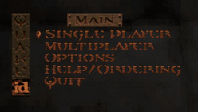
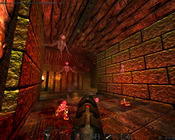
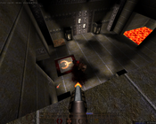
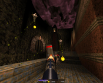

Quake
Dieser Artikel wurde für die folgenden Ubuntu-Versionen getestet:
Dieser Artikel ist mit keiner aktuell unterstützten Ubuntu-Version getestet! Bitte diesen Artikel testen und das getestet-Tag entsprechend anpassen.
Zum Verständnis dieses Artikels sind folgende Seiten hilfreich:
Quake  , der erste Titel der Quake Serie, wurde 1996 von id Software auf den Markt gebracht und ist das erste Egoshooterspiel von id, welches alle Models und Objekte in 3d-Polygonen darstellt und nicht mehr Sprites (2d Grafiken) verwendet. Es besticht durch sein schlichtes und überzeugendes Artwork und punktet durch rasantes und abwechslungsreiches Gameplay.
, der erste Titel der Quake Serie, wurde 1996 von id Software auf den Markt gebracht und ist das erste Egoshooterspiel von id, welches alle Models und Objekte in 3d-Polygonen darstellt und nicht mehr Sprites (2d Grafiken) verwendet. Es besticht durch sein schlichtes und überzeugendes Artwork und punktet durch rasantes und abwechslungsreiches Gameplay.
|  |
| Menü |
|  |
| HD-Mod Epsilon |
|  |
| QRP Texturen |
|  |
| Quakespasm |
Installation¶
Darkplaces¶
Wer stark verbesserte Grafik mit z.B. Schatten und Lichteffekten haben möchte bekommt mit Darkplaces  eine stark weiterentwickelte Engine. Da nur die Spieleengine als Opensource freigegeben wurde und der Spieleinhalt properietär geblieben ist muss man die Dateien die das Spiel beinhalten in den Installationsordner der Engine übertragen. Die Eingine wurde von Hobbyprogrammierern stetig weiterentwickelt und so gibt es heute zahlreiche Sourceports von denen man sich den, für sich Passenden, auswählen kann. Man kann Jeden der hier aufgeführten Sourceports einfach herunterladen und direkt starten, sollten noch Abhängigkeitsprobleme bestehen und das Programm startet nicht, kann man eine parallele Installation aus den Paketquellen durchführen. Sofern man die Spieledateien durch eine bestehende Installation noch nicht zugänglich zur Verfügung hat, installiert man das Spiel unter Wine [1].
eine stark weiterentwickelte Engine. Da nur die Spieleengine als Opensource freigegeben wurde und der Spieleinhalt properietär geblieben ist muss man die Dateien die das Spiel beinhalten in den Installationsordner der Engine übertragen. Die Eingine wurde von Hobbyprogrammierern stetig weiterentwickelt und so gibt es heute zahlreiche Sourceports von denen man sich den, für sich Passenden, auswählen kann. Man kann Jeden der hier aufgeführten Sourceports einfach herunterladen und direkt starten, sollten noch Abhängigkeitsprobleme bestehen und das Programm startet nicht, kann man eine parallele Installation aus den Paketquellen durchführen. Sofern man die Spieledateien durch eine bestehende Installation noch nicht zugänglich zur Verfügung hat, installiert man das Spiel unter Wine [1].
Folgende Dateien und Ordner müssen in das Programmverzeichnis des jeweiligen Soucreports übertragen z.B. nach ~/Spiele/Darkplaces:
id/pak0.pak
id/pak1.pak
id/gfx.wad
id/music/track02.ogg (Es können auch die Dateien aus der Demo genommen werden, damit ist dann sogar das Onlinespielen möglich.)
Hinweis:
Ordnernamen und Dateinamen dürfen nur Kleinbuchstaben enthalten.
Modifikationen¶
| Mods | ||
| Art | Name / Link | Beschreibung |
| Texturepack | Quake Revitalization/Retexturing/Remodeling Project 2002–2013 | schärfere Textur |
| Texturepack | Yellow No. 5's Monster Skins | schärfere Textur |
| Soundpack | Epiquake | Zu den erwähnten Texturepacks passend kristallklare Sounds und Musik . Die .pk3-Dateien müssen einfach in den Ordner id1 kopieren. |
| Quake HD Pack | HD Pack | HD-Texturen |
| Quake HD Pack | Quake Epsilon | Zum Einsatz mit der Darkplaces Engine und zaubern ein wahres Grafikgewitter auf den Bildschirm. |
Seiten auf denen Modifikationen zu finden sind findet man unter den Links.
Quakespasm¶
Will man Quake puristisch und orginalgeträu als Singleplayerkampagne spielen, kann der Sourceport QuakeSpasm empfohlen werden. Die Version von der Entwicklerseite ist gegenüber der Paketquelle zu bevorzugen, da sie aktueller ist.
Entwicklerseite¶
Die aktuelle Version von QuakeSpasm und entpacken [3] - z.B. nach ~/Spiele/QuakeSpasm
Tipps¶
Die Spielmodis leicht bis schwer sind für einen geübten Spieler zu langweilig, daher sollte man gleich zum Nightmare Modus greifen. Wie das geht zeigen zahlreiche Youtubevideos, siehe Links.
In den Optionen sollte Mouselook auf
"on"stehen.Über die Funktionstasten F6 und F9 kann Schnellgespeichert und geladen werden, F10 beendet das Spiel.
Will man ein stark verändertes Gameplay mit besserer KI kann der Mod Improved Quake empfohlen werden. Dieser kann in ein Verzeichnis im Enine Ordner entpackt werden und im Terminal oder mit einem Script mit dem Anhängsel
-game Verzeichnis
gestartet werden, oder aus dem Mod Menü von Darkplaces ausgewählt werden.
Darkplaces¶
Die Einstellung "
r_water 1" in Darkplaces kostet viel Performance und sollte auf0stehen. Startet man z.B. unterschiedliche Versionen von Darkplaces können diese die gespeicherten Einstellungen in .darkplaces im Homeverzeichnis verändern.r_fullbright 1bringt Performance und hellt das ganze Spiel stark auf, d.h. es können sich keine Zombies mehr in dunklen Ecken verbergen.Um das Laden des Demoloops am Anfang zu verhindern kann man die pak0.pak entpacken, z.B. mit Dragon UnPacker, die Demo.dems löschen und dann wieder zu einem zip Archiv komprimieren und dieses in pak0.pk3 umbenennen.
Quakespasm¶
Für Quakespasm wird die Konfigurationsdatei id1/config.cfg angelegt, diese sollte nicht bearbeitet werden, da sie bei jedem Neustart neu geschrieben wird und die Einstellungen verloren gehen. Die folgenden Einstellungen sollten in in die Datei: id/autoexec.cfg geschrieben werden, welche neu erstellt werden muss. In diese können dann die Einstellugen eingetragen werden, die beim Start geladen werden sollen, z.B.:
bind "c" "impulse 5"Bindet auf die Taste C den Granatwerfer. (1 Shotgun, 2 Super Shotgun, 3 Nailgun, 4 Chaingun, 5 Grenade Launcher, 6 Rocket Launcher)crosshair "1"Aktiviert das Crosshair in der Mitte des Bildschirms.scr_crosshairscale "2"Größe des Crosshairs.fov "100"Vergrößert das Sichtfeld (75-130).sv_aim "1"Schaltet das vertiale Autoaim aus. Auf"0"wird der Gegner auch getroffen, wenn man unter oder über ihn zielt.viewsize "100"Normaler Bildschirmausschnitt mit Hud.scr_menuscale "2"Größe des Menüs.

Infobox¶
| Quake | |
| Genre: | Ego-Shooter |
| Sprache: | |
| Veröffentlichung: | 1996 |
| Publisher: | GT Interactive |
| Systemvoraussetzungen: | Dos, Windows, Linux, 75MHz Pentium, Soundkarte (Soundblaster), 16 MB Ram. |
| Medien: | Download |
| Strichcode / EAN / GTIN: | - |
| Läuft mit: | nativ |

- Erstellt mit Inyoka
-
 2004 – 2017 ubuntuusers.de • Einige Rechte vorbehalten
2004 – 2017 ubuntuusers.de • Einige Rechte vorbehalten
Lizenz • Kontakt • Datenschutz • Impressum • Serverstatus -
Serverhousing gespendet von